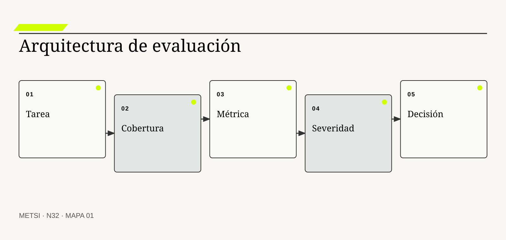
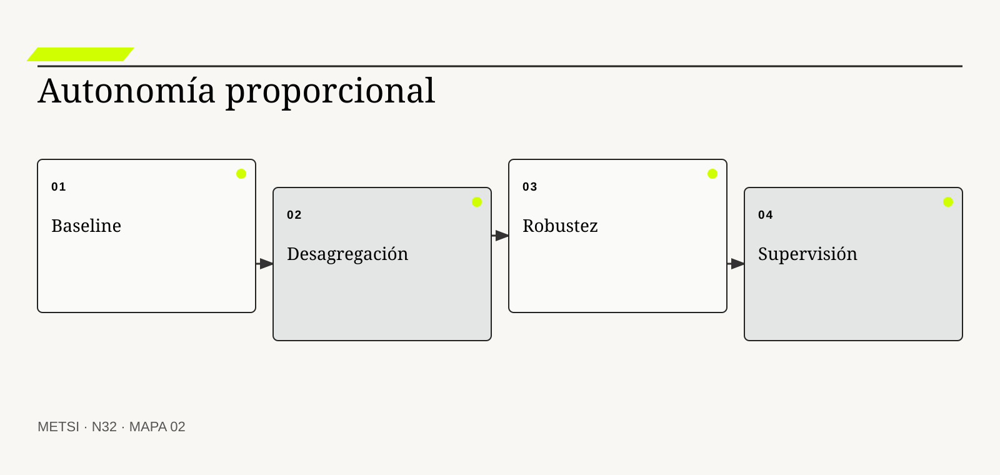
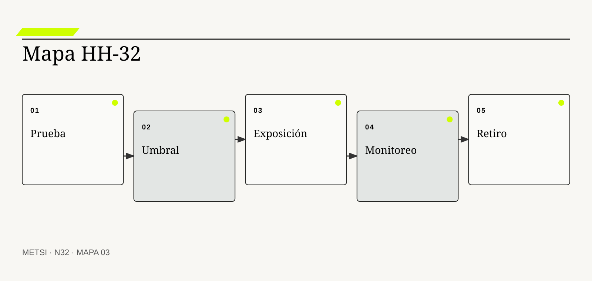

NIST
Desarrolla medición, evaluación, verificación y validación de sistemas de IA.

N32 evalúa tareas, cobertura, severidad, desigualdad, robustez y supervisión real antes de asignar autonomía a una capacidad de inteligencia…
Evaluar tareas, cobertura, severidad, desigualdad, robustez y supervisión
Ruta de lectura: problema, distinciones, decisiones, prueba, transferencia y preparación.
Nota. SIN NUM. identifica aparatos de orientación y referencia.
Seis voces para ampliar, contrastar y discutir N32.
Desarrolla medición, evaluación, verificación y validación de sistemas de IA.
Mostraron desigualdades ocultas por agregación en sistemas de clasificación.
Vinculan diseño con valores y actores afectados.
Explica zonas de deformación moral en sistemas autónomos.
Propone control humano confiable y verificable.
Estandariza conceptos de sesgo, robustez y gestión de riesgo.
N32 no resume estas fuentes ni las convierte en receta. Las pone en tensión para construir juicio profesional.
¿Qué evidencia permite asignar autonomía a una capacidad de IA sin ocultar fallas graves detrás de un buen promedio?

N32 evalúa tareas, cobertura, severidad, desigualdad, robustez y supervisión real antes de asignar autonomía a una capacidad de inteligencia artificial.
El asistente de Hotel Horizonte alcanza noventa y dos por ciento de respuestas consideradas correctas. La cifra habilita un piloto amplio. Una semana después, el equipo descubre que las consultas sobre accesibilidad eran escasas en el conjunto de prueba y concentraban casi todos los errores graves.
La evaluación había medido desempeño medio, no cobertura del uso ni severidad de consecuencias. Tampoco había probado cambios de temporada, instrucciones adversas, capacidad de supervisión ni tiempo disponible para reparar.
Evaluar un sistema de IA exige definir unidad de análisis, población, baseline, criterio, umbral y decisión asociada. La evaluación sociotécnica debe representar el sistema sociotécnico completo, incluyendo personas, interfaces, datos y operación.
El equipo de evaluación reconstruye casos, separa error inocuo de daño material, desagrega resultados y mide al conjunto humano y automático. La autonomía deja de ser una etiqueta y se convierte en una exposición graduada.
La evaluación sociotécnica anterior al despliegue no alcanza. El comportamiento cambia con entradas, modelos, proveedores, incentivos y aprendizaje de usuarios; la evaluación continúa durante la operación.
N32 recibe de N31 una capacidad considerada pertinente y pregunta si la evidencia de desempeño disponible justifica su alcance, su nivel de autonomía y sus protecciones.
HH-32 evalúa clasificación, redacción y acción por separado. Construye un conjunto con casos ordinarios, extremos y adversos, desagrega por tipo de necesidad, pondera severidad, compara baseline humana y simple, y ensaya la supervisión bajo carga. La autonomía sólo aumenta cuando desempeño, cobertura y reparación cumplen umbrales explícitos.
N32 evalúa tareas, cobertura, severidad, desigualdad, robustez y supervisión real antes de asignar autonomía a una capacidad de inteligencia artificial.
N31 deja evidencia y decisiones abiertas que N32 utiliza sin reabrir su contenido. N32 evalúa tareas, cobertura, severidad, desigualdad, robustez y supervisión real antes de asignar autonomía a una capacidad de inteligencia artificial.
N33 convertirá esa evidencia en gobierno vivo del ciclo de vida. N32 no diseña todavía inventario institucional, ownership, control de cambios, incidentes ni retiro.
NIST incorpora gobierno, medición y manejo del riesgo de inteligencia artificial. En N32, ese aporte pone a prueba decisiones concretas y no funciona como respaldo ornamental. Su alcance se conserva en N32: ninguna referencia sustituye la evidencia de desempeño del caso ni la autoridad de despliegue necesaria para intervenir.
NIST aporta una fuente contrastable para definir alcance, evidencia y condiciones de revisión. En N32, ese aporte pone a prueba decisiones concretas y no funciona como respaldo ornamental. Su alcance se conserva en N32: ninguna referencia sustituye la evidencia de desempeño del caso ni la autoridad de despliegue necesaria para intervenir.
NIST muestra por qué la evaluación previa necesita observación repetida en despliegue. En N32, ese aporte pone a prueba decisiones concretas y no funciona como respaldo ornamental. Su alcance se conserva en N32: ninguna referencia sustituye la evidencia de desempeño del caso ni la autoridad de despliegue necesaria para intervenir.
NIST propone una arquitectura borrador para evaluación sociotécnica continua. En N32, ese aporte pone a prueba decisiones concretas y no funciona como respaldo ornamental. Su alcance se conserva en N32: ninguna referencia sustituye la evidencia de desempeño del caso ni la autoridad de despliegue necesaria para intervenir.
Buolamwini, J. y Gebru, T. demuestra cómo el promedio puede ocultar desigualdades relevantes. En N32, ese aporte pone a prueba decisiones concretas y no funciona como respaldo ornamental. Su alcance se conserva en N32: ninguna referencia sustituye la evidencia de desempeño del caso ni la autoridad de despliegue necesaria para intervenir.
Friedman, B. y Hendry, D. G. aportan una fuente contrastable para definir alcance, evidencia y condiciones de revisión. En N32, ese aporte pone a prueba decisiones concretas y no funciona como respaldo ornamental. Su alcance se conserva en N32: ninguna referencia sustituye la evidencia de desempeño del caso ni la autoridad de despliegue necesaria para intervenir.
Elish, M. C. explica cómo la responsabilidad puede deformarse alrededor de personas supervisoras. En N32, ese aporte pone a prueba decisiones concretas y no funciona como respaldo ornamental. Su alcance se conserva en N32: ninguna referencia sustituye la evidencia de desempeño del caso ni la autoridad de despliegue necesaria para intervenir.
Shneiderman, B. aporta una fuente contrastable para definir alcance, evidencia y condiciones de revisión. En N32, ese aporte pone a prueba decisiones concretas y no funciona como respaldo ornamental. Su alcance se conserva en N32: ninguna referencia sustituye la evidencia de desempeño del caso ni la autoridad de despliegue necesaria para intervenir.
ISO/IEC incorpora gobierno, medición y manejo del riesgo de inteligencia artificial. En N32, ese aporte pone a prueba decisiones concretas y no funciona como respaldo ornamental. Su alcance se conserva en N32: ninguna referencia sustituye la evidencia de desempeño del caso ni la autoridad de despliegue necesaria para intervenir.
ISO/IEC aporta una fuente contrastable para definir alcance, evidencia y condiciones de revisión. En N32, ese aporte pone a prueba decisiones concretas y no funciona como respaldo ornamental. Su alcance se conserva en N32: ninguna referencia sustituye la evidencia de desempeño del caso ni la autoridad de despliegue necesaria para intervenir.
Amershi, S. et al. aportan pautas para expectativa, control, corrección y recuperación. En N32, ese aporte pone a prueba decisiones concretas y no funciona como respaldo ornamental. Su alcance se conserva en N32: ninguna referencia sustituye la evidencia de desempeño del caso ni la autoridad de despliegue necesaria para intervenir.
Raji, I. D. et al. conectan auditoría con documentación, roles y procesos internos. En N32, ese aporte pone a prueba decisiones concretas y no funciona como respaldo ornamental. Su alcance se conserva en N32: ninguna referencia sustituye la evidencia de desempeño del caso ni la autoridad de despliegue necesaria para intervenir.

La unidad de evaluación combina tarea, población, contexto, salida y consecuencia. La definición fija el objeto de decisión. Si el equipo de N32 no puede expresar qué compromiso organiza, la categoría funciona como etiqueta y no como instrumento.
No es el modelo aislado ni un benchmark genérico. La distinción evita que una palabra familiar oculte otro mecanismo. En N32, confundirlos cambia qué se observa, qué se acepta como avance y quién debe intervenir.
En unidad de evaluación, el recorrido causal debe mostrar qué condición habilita la acción, qué transformación ocurre y quién absorbe el resultado. Unidad de evaluación se operacionaliza delimitando propósito, población, entradas, autoridad, acción, consecuencia y condición de revisión. El recorrido se contrasta con una alternativa más simple y con un escenario adverso antes de ampliar compromiso. Si un salto depende sólo de una explicación oral, la estrategia todavía no puede gobernarlo.
La evidencia relevante para unidad de evaluación no se limita al resultado promedio. La evidencia integra una prueba previa, resultados desagregados y el episodio siguiente: Cada respuesta del asistente se vincula con la decisión posterior También conserva las decisiones humanas y automáticas que produjeron ese resultado. N32 busca además casos negativos, diferencias entre poblaciones y señales de que la explicación elegida podría ser insuficiente.
Ejemplo. Cada respuesta del asistente se vincula con la decisión posterior En N32, el episodio vuelve visible la relación entre ritmo, autoridad, evidencia y capacidad de reparación.
El tradeoff central de unidad de evaluación aparece entre anticipar y preservar opciones. Anticipar puede reducir coordinación y también fijar una premisa prematura; preservar opciones puede producir aprendizaje y también demorar una protección necesaria. La elección debe declarar cuál de esos costos acepta, durante cuánto tiempo y para quién.
La evaluación independiente de unidad de evaluación termina con una pregunta de uso: ¿qué podría decidir ahora una persona que antes no podía? En N32, la respuesta debe nombrar una acción, una restricción y una evidencia, no sólo una comprensión mejorada.
Operacionalizar unidad de evaluación requiere asignar una unidad observable. El equipo de evaluación define qué episodio contará, desde qué momento, con qué población y bajo qué fuente. Después compara al menos un caso ordinario con otro que fuerce excepción. Esta precisión en N32 evita que una conclusión general se sostenga sólo en ejemplos convenientes.
La decisión profesional no termina en adoptar unidad de evaluación. Se compara una ruta principal con una explicación rival, se explicita quién queda expuesto y se conserva un modo de revisar. Cambiar la unidad puede invertir la conclusión sobre desempeño. El límite forma parte del diseño y no una nota posterior.
La cobertura expresa qué proporción y diversidad del uso previsto está representada. Conviene comenzar por su función profesional. Si el equipo de N32 no puede expresar qué compromiso organiza, la categoría funciona como etiqueta y no como instrumento.
No coincide con cantidad total de casos. El contraste importa porque conduce a pruebas distintas. En N32, confundirlos cambia qué se observa, qué se acepta como avance y quién debe intervenir.
El mecanismo de cobertura no se presume por el nombre. Cobertura se operacionaliza delimitando propósito, población, entradas, autoridad, acción, consecuencia y condición de revisión. El recorrido se contrasta con una alternativa más simple y con un escenario adverso antes de ampliar compromiso. Debe localizarse dónde comienza, qué relaciones activa, qué demora introduce y qué capacidad de reparación queda disponible cuando la expectativa no se cumple.
Una afirmación sobre cobertura gana fuerza cuando puede reconstruirse desde fuentes independientes. La evidencia integra una prueba previa, resultados desagregados y el episodio siguiente: El conjunto incluye excepciones de accesibilidad y temporadas altas También conserva las decisiones humanas y automáticas que produjeron ese resultado. La ausencia de señal también se interpreta: puede significar estabilidad, mala observación o exclusión del caso que más importa.
Ejemplo. El conjunto incluye excepciones de accesibilidad y temporadas altas En N32, el episodio vuelve visible la relación entre ritmo, autoridad, evidencia y capacidad de reparación.
La escala modifica cobertura. Una solución válida para un equipo puede fallar cuando atraviesa sedes, turnos o proveedores porque aumenta la distancia entre señal y autoridad. Antes de ampliar, N32 prueba si la misma decisión conserva significado y reparación bajo esa nueva distribución.
Para evitar consenso aparente, cobertura se revisa con alguien afectado y con alguien responsable de reparar. Las dos perspectivas pueden valorar resultados diferentes y obligan a declarar la prioridad elegida.
En la práctica, cobertura atraviesa más de un área. Se identifican handoffs, esperas, decisiones y datos que cada participante puede ver. Cuando dos áreas usan evidencia distinta en N32, el expediente conserva la divergencia hasta determinar si representa error, perspectiva legítima o una brecha que la estrategia debe resolver.
En una revisión, cobertura debe responder tres preguntas: qué mejora, qué desplaza y qué vuelve más difícil de revertir. Casos raros pueden dominar el riesgo aunque pesen poco en el promedio. Si esas respuestas cambian, también debe cambiar el compromiso, aunque el trabajo previo haya sido técnicamente correcto.
La baseline representa la mejor alternativa practicable sin el cambio evaluado. El concepto adquiere valor cuando cambia un nivel de autonomía. Si el equipo de N32 no puede expresar qué compromiso organiza, la categoría funciona como etiqueta y no como instrumento.
No es ausencia de solución ni desempeño humano idealizado. Su vecino conceptual puede parecer equivalente y no lo es. En N32, confundirlos cambia qué se observa, qué se acepta como avance y quién debe intervenir.
Comprender baseline exige seguir la decisión en el tiempo. Baseline se operacionaliza delimitando propósito, población, entradas, autoridad, acción, consecuencia y condición de revisión. El recorrido se contrasta con una alternativa más simple y con un escenario adverso antes de ampliar compromiso. La medición distingue condición, intervención, señal temprana y consecuencia para evitar atribuir a una práctica un efecto producido por otro cambio simultáneo.
La evaluación sociotécnica de baseline debe formularse antes de conocer el resultado. La evidencia integra una prueba previa, resultados desagregados y el episodio siguiente: Se compara con búsqueda guiada y atención actual También conserva las decisiones humanas y automáticas que produjeron ese resultado. Se registra qué observación sostendría continuar, cuál obligaría a adaptar y cuál activaría detención o escalamiento.
Ejemplo. Se compara con búsqueda guiada y atención actual En N32, el episodio vuelve visible la relación entre ritmo, autoridad, evidencia y capacidad de reparación.
El tiempo también altera baseline. Una evidencia suficiente para explorar puede ser insuficiente para operar de forma permanente. Por eso se separan prueba local, compromiso transitorio y condición estable, y cada estado conserva fecha, alcance y responsable de revisión.
El registro de baseline conserva una explicación rival. Si esa alternativa predice mejor el episodio siguiente, el equipo cambia de curso sin reescribir retrospectivamente lo que creía saber.
La gobernanza de baseline incluye quién puede proponer, aprobar, ejecutar, observar y reparar. Esas funciones no se presumen por cargo ni por permiso técnico. N32 las prueba en un escenario donde falta la persona habitual, porque una capacidad que sólo funciona con conocimiento privado todavía no pertenece a la organización.
El juicio sobre baseline incluye distribución de consecuencias. Una baseline degradada puede inflar artificialmente el valor incremental. Una mejora agregada no alcanza si concentra espera, riesgo o trabajo invisible en un grupo sin autoridad para discutir la decisión.
La validez pregunta si la medida representa la capacidad que se pretende juzgar. La definición fija el objeto de decisión. Si el equipo de N32 no puede expresar qué compromiso organiza, la categoría funciona como etiqueta y no como instrumento.
Exactitud superficial puede no medir utilidad ni seguridad. La distinción evita que una palabra familiar oculte otro mecanismo. En N32, confundirlos cambia qué se observa, qué se acepta como avance y quién debe intervenir.
La explicación operacional de validez de constructo conecta personas, reglas y tecnología. Validez de constructo se operacionaliza delimitando propósito, población, entradas, autoridad, acción, consecuencia y condición de revisión. El recorrido se contrasta con una alternativa más simple y con un escenario adverso antes de ampliar compromiso. Esa conexión permite decidir qué parte puede modificarse localmente y cuál requiere coordinación con otras autoridades o capacidades.
Para auditar validez de constructo, conviene combinar evidencia de diseño, ejecución y consecuencia. La evidencia integra una prueba previa, resultados desagregados y el episodio siguiente: Una rúbrica distingue respuesta completa de respuesta persuasiva También conserva las decisiones humanas y automáticas que produjeron ese resultado. Ninguna fuente domina automáticamente; una especificación correcta puede convivir con una operación dañina.
Ejemplo. Una rúbrica distingue respuesta completa de respuesta persuasiva En N32, el episodio vuelve visible la relación entre ritmo, autoridad, evidencia y capacidad de reparación.
Existe además una dimensión política en validez de constructo. La opción más eficiente puede reducir la capacidad de una persona para cuestionar un nivel de autonomía o trasladar trabajo sin reconocerlo. N32 registra esa distribución y no la esconde dentro de un indicador agregado.
Una prueba adversa de validez de constructo introduce demora, ausencia de autoridad o dato incompleto. El objetivo de N32 no es cubrir todas las fallas, sino revelar si la estrategia mantiene una salida segura fuera del camino ordinario.
El indicador de validez de constructo se elige después de formular la decisión. Puede combinar tiempo, calidad, distribución y costo de reparación. Una cifra aislada rara vez explica el mecanismo. En N32, la lectura conjunta de señales evita optimizar velocidad mientras aumenta retrabajo, exclusión o dependencia.
La condición de cierre de validez de constructo no es perfección. La métrica puede premiar conducta contraria al propósito. Es evidencia suficiente para el uso previsto, riesgo residual aceptado por autoridad y una ruta clara cuando el supuesto deje de cumplirse.

La severidad clasifica consecuencias por daño, alcance, reversibilidad y población. Conviene comenzar por su función profesional. Si el equipo de N32 no puede expresar qué compromiso organiza, la categoría funciona como etiqueta y no como instrumento.
No equivale a frecuencia ni confianza del modelo. El contraste importa porque conduce a pruebas distintas. En N32, confundirlos cambia qué se observa, qué se acepta como avance y quién debe intervenir.
Para que severidad sea algo más que una etiqueta, debe existir una cadena examinable. Severidad se operacionaliza delimitando propósito, población, entradas, autoridad, acción, consecuencia y condición de revisión. El recorrido se contrasta con una alternativa más simple y con un escenario adverso antes de ampliar compromiso. La cadena incluye supuestos, handoffs y efectos laterales que una descripción ideal suele omitir.
El equipo de evaluación no declara resuelto severidad por acuerdo retórico. La evidencia integra una prueba previa, resultados desagregados y el episodio siguiente: Negar una habitación accesible pesa más que un error de estilo También conserva las decisiones humanas y automáticas que produjeron ese resultado. Una persona ajena al diseño debe poder repetir la prueba y comprender por qué el resultado habilita un nivel de autonomía concreta.
Ejemplo. Negar una habitación accesible pesa más que un error de estilo En N32, el episodio vuelve visible la relación entre ritmo, autoridad, evidencia y capacidad de reparación.
La mantenibilidad de severidad se prueba mediante cambio deliberado. Se modifica una regla, una fuente o una dependencia y se observa quién detecta el impacto, cuánto tarda en responder y qué información necesita. En N32, si la respuesta depende de memoria privada, la capacidad todavía es frágil.
El costo de severidad se observa tanto en presupuesto como en atención, espera, coordinación y dependencia. Lo que no figura en una factura puede seguir siendo el costo que define la viabilidad.
La transición asociada con severidad necesita un estado intermedio explícito. Durante ese período conviven reglas, versiones o capacidades diferentes. N32 declara cuál rige para cada población, cómo se comunica y qué contingencia protege a quien podría quedar entre ambos sistemas.
La medición de severidad evita dos extremos: conservar por inercia y cambiar por identidad metodológica. Baja frecuencia no vuelve tolerable un daño irreversible. Entre ambos queda un nivel de autonomía provisional con fecha, responsable y prueba de revisión.
El desempeño desagregado muestra diferencias entre grupos, contextos y clases de caso. El concepto adquiere valor cuando cambia un nivel de autonomía. Si el equipo de N32 no puede expresar qué compromiso organiza, la categoría funciona como etiqueta y no como instrumento.
Un promedio global puede ocultar desigualdad sistemática. Su vecino conceptual puede parecer equivalente y no lo es. En N32, confundirlos cambia qué se observa, qué se acepta como avance y quién debe intervenir.
El valor de desempeño desagregado aparece al contrastar alternativas. Desempeño desagregado se operacionaliza delimitando propósito, población, entradas, autoridad, acción, consecuencia y condición de revisión. El recorrido se contrasta con una alternativa más simple y con un escenario adverso antes de ampliar compromiso. Si dos opciones producen el mismo entregable inmediato, el mecanismo permite compararlas por aprendizaje, dependencia, riesgo residual y posibilidad de salida.
La suficiencia de evidencia para desempeño desagregado depende del costo de equivocarse. La evidencia integra una prueba previa, resultados desagregados y el episodio siguiente: Se comparan consultas por idioma, canal y necesidad También conserva las decisiones humanas y automáticas que produjeron ese resultado. A mayor irreversibilidad o desigualdad de daño, mayor contraste, supervisión y autoridad se requieren.
Ejemplo. Se comparan consultas por idioma, canal y necesidad En N32, el episodio vuelve visible la relación entre ritmo, autoridad, evidencia y capacidad de reparación.
Finalmente, desempeño desagregado debe convivir con otras decisiones. Optimizarla de manera aislada puede empeorar flujo, seguridad o comprensión. HH-32 N32 explicita dependencias y evita que una mejora local se presente como outcome completo del sistema.
La revisión de desempeño desagregado fija fecha y desencadenante. Puede ocurrir por incidente, cambio normativo, nueva población o evidencia acumulada. Sin esa regla en N32, un nivel de autonomía provisional se vuelve permanente por olvido.
El cierre de desempeño desagregado debe sobrevivir a una revisión independiente. La evidencia, las decisiones y los límites se almacenan de manera que otra persona pueda cuestionarlos. En N32, la trazabilidad no busca eliminar desacuerdo; busca que el desacuerdo se concentre en supuestos examinables y no en recuerdos incompatibles.
La exposición evaluada debe poder explicar por qué desempeño desagregado recibe cierta inversión y no otra. Categorías demasiado amplias pueden volver invisible la población relevante. Esa explicación conecta valor, costo, aprendizaje y reparación, y permanece abierta a evidencia nueva.
La robustez es capacidad de sostener comportamiento aceptable ante variación esperable. La definición fija el objeto de decisión. Si el equipo de N32 no puede expresar qué compromiso organiza, la categoría funciona como etiqueta y no como instrumento.
No significa inmunidad a todo cambio. La distinción evita que una palabra familiar oculte otro mecanismo. En N32, confundirlos cambia qué se observa, qué se acepta como avance y quién debe intervenir.
En robustez, el recorrido causal debe mostrar qué condición habilita la acción, qué transformación ocurre y quién absorbe el resultado. Robustez se operacionaliza delimitando propósito, población, entradas, autoridad, acción, consecuencia y condición de revisión. El recorrido se contrasta con una alternativa más simple y con un escenario adverso antes de ampliar compromiso. Si un salto depende sólo de una explicación oral, la estrategia todavía no puede gobernarlo.
La evidencia relevante para robustez no se limita al resultado promedio. La evidencia integra una prueba previa, resultados desagregados y el episodio siguiente: Se modifican redacción, orden y datos irrelevantes de la consulta También conserva las decisiones humanas y automáticas que produjeron ese resultado. N32 busca además casos negativos, diferencias entre poblaciones y señales de que la explicación elegida podría ser insuficiente.
Ejemplo. Se modifican redacción, orden y datos irrelevantes de la consulta En N32, el episodio vuelve visible la relación entre ritmo, autoridad, evidencia y capacidad de reparación.
El tradeoff central de robustez aparece entre anticipar y preservar opciones. Anticipar puede reducir coordinación y también fijar una premisa prematura; preservar opciones puede producir aprendizaje y también demorar una protección necesaria. La elección debe declarar cuál de esos costos acepta, durante cuánto tiempo y para quién.
La evaluación independiente de robustez termina con una pregunta de uso: ¿qué podría decidir ahora una persona que antes no podía? En N32, la respuesta debe nombrar una acción, una restricción y una evidencia, no sólo una comprensión mejorada.
Operacionalizar robustez requiere asignar una unidad observable. El equipo de evaluación define qué episodio contará, desde qué momento, con qué población y bajo qué fuente. Después compara al menos un caso ordinario con otro que fuerce excepción. Esta precisión en N32 evita que una conclusión general se sostenga sólo en ejemplos convenientes.
La decisión profesional no termina en adoptar robustez. Se compara una ruta principal con una explicación rival, se explicita quién queda expuesto y se conserva un modo de revisar. Una prueba limitada no anticipa todas las distribuciones futuras. El límite forma parte del diseño y no una nota posterior.
La evaluación sociotécnica adversa busca activamente modos de falla, abuso y evasión. Conviene comenzar por su función profesional. Si el equipo de N32 no puede expresar qué compromiso organiza, la categoría funciona como etiqueta y no como instrumento.
No es creatividad sin modelo de amenaza. El contraste importa porque conduce a pruebas distintas. En N32, confundirlos cambia qué se observa, qué se acepta como avance y quién debe intervenir.
El mecanismo de prueba adversa no se presume por el nombre. Prueba adversa se operacionaliza delimitando propósito, población, entradas, autoridad, acción, consecuencia y condición de revisión. El recorrido se contrasta con una alternativa más simple y con un escenario adverso antes de ampliar compromiso. Debe localizarse dónde comienza, qué relaciones activa, qué demora introduce y qué capacidad de reparación queda disponible cuando la expectativa no se cumple.
Una afirmación sobre prueba adversa gana fuerza cuando puede reconstruirse desde fuentes independientes. La evidencia integra una prueba previa, resultados desagregados y el episodio siguiente: Se intenta obtener descuentos o datos mediante instrucciones maliciosas También conserva las decisiones humanas y automáticas que produjeron ese resultado. La ausencia de señal también se interpreta: puede significar estabilidad, mala observación o exclusión del caso que más importa.
Ejemplo. Se intenta obtener descuentos o datos mediante instrucciones maliciosas En N32, el episodio vuelve visible la relación entre ritmo, autoridad, evidencia y capacidad de reparación.
La escala modifica prueba adversa. Una solución válida para un equipo puede fallar cuando atraviesa sedes, turnos o proveedores porque aumenta la distancia entre señal y autoridad. Antes de ampliar, N32 prueba si la misma decisión conserva significado y reparación bajo esa nueva distribución.
Para evitar consenso aparente, prueba adversa se revisa con alguien afectado y con alguien responsable de reparar. Las dos perspectivas pueden valorar resultados diferentes y obligan a declarar la prioridad elegida.
En la práctica, prueba adversa atraviesa más de un área. Se identifican handoffs, esperas, decisiones y datos que cada participante puede ver. Cuando dos áreas usan evidencia distinta en N32, el expediente conserva la divergencia hasta determinar si representa error, perspectiva legítima o una brecha que la estrategia debe resolver.
En una revisión, prueba adversa debe responder tres preguntas: qué mejora, qué desplaza y qué vuelve más difícil de revertir. Publicar ataques sin control también puede ampliar exposición. Si esas respuestas cambian, también debe cambiar el compromiso, aunque el trabajo previo haya sido técnicamente correcto.

La confiabilidad estudia variación entre ejecuciones y condiciones equivalentes. El concepto adquiere valor cuando cambia un nivel de autonomía. Si el equipo de N32 no puede expresar qué compromiso organiza, la categoría funciona como etiqueta y no como instrumento.
Una única respuesta correcta no caracteriza un sistema no determinista. Su vecino conceptual puede parecer equivalente y no lo es. En N32, confundirlos cambia qué se observa, qué se acepta como avance y quién debe intervenir.
Comprender confiabilidad y repetibilidad exige seguir la decisión en el tiempo. Confiabilidad y repetibilidad se operacionaliza delimitando propósito, población, entradas, autoridad, acción, consecuencia y condición de revisión. El recorrido se contrasta con una alternativa más simple y con un escenario adverso antes de ampliar compromiso. La medición distingue condición, intervención, señal temprana y consecuencia para evitar atribuir a una práctica un efecto producido por otro cambio simultáneo.
La evaluación sociotécnica de confiabilidad y repetibilidad debe formularse antes de conocer el resultado. La evidencia integra una prueba previa, resultados desagregados y el episodio siguiente: Se repite la misma tarea con versiones y temperaturas controladas También conserva las decisiones humanas y automáticas que produjeron ese resultado. Se registra qué observación sostendría continuar, cuál obligaría a adaptar y cuál activaría detención o escalamiento.
Ejemplo. Se repite la misma tarea con versiones y temperaturas controladas En N32, el episodio vuelve visible la relación entre ritmo, autoridad, evidencia y capacidad de reparación.
El tiempo también altera confiabilidad y repetibilidad. Una evidencia suficiente para explorar puede ser insuficiente para operar de forma permanente. Por eso se separan prueba local, compromiso transitorio y condición estable, y cada estado conserva fecha, alcance y responsable de revisión.
El registro de confiabilidad y repetibilidad conserva una explicación rival. Si esa alternativa predice mejor el episodio siguiente, el equipo cambia de curso sin reescribir retrospectivamente lo que creía saber.
La gobernanza de confiabilidad y repetibilidad incluye quién puede proponer, aprobar, ejecutar, observar y reparar. Esas funciones no se presumen por cargo ni por permiso técnico. N32 las prueba en un escenario donde falta la persona habitual, porque una capacidad que sólo funciona con conocimiento privado todavía no pertenece a la organización.
El juicio sobre confiabilidad y repetibilidad incluye distribución de consecuencias. La repetibilidad total puede ser innecesaria si la consecuencia permanece estable. Una mejora agregada no alcanza si concentra espera, riesgo o trabajo invisible en un grupo sin autoridad para discutir la decisión.
La evaluación sociotécnica mide el resultado del conjunto y no sólo de sus componentes. La definición fija el objeto de decisión. Si el equipo de N32 no puede expresar qué compromiso organiza, la categoría funciona como etiqueta y no como instrumento.
Una mejor recomendación puede empeorar la decisión si induce confianza excesiva. La distinción evita que una palabra familiar oculte otro mecanismo. En N32, confundirlos cambia qué se observa, qué se acepta como avance y quién debe intervenir.
La explicación operacional de desempeño del equipo humano ia conecta personas, reglas y tecnología. Desempeño del equipo humano IA se operacionaliza delimitando propósito, población, entradas, autoridad, acción, consecuencia y condición de revisión. El recorrido se contrasta con una alternativa más simple y con un escenario adverso antes de ampliar compromiso. Esa conexión permite decidir qué parte puede modificarse localmente y cuál requiere coordinación con otras autoridades o capacidades.
Para auditar desempeño del equipo humano ia, conviene combinar evidencia de diseño, ejecución y consecuencia. La evidencia integra una prueba previa, resultados desagregados y el episodio siguiente: Se observa cuándo Recepción acepta, corrige o ignora sugerencias También conserva las decisiones humanas y automáticas que produjeron ese resultado. Ninguna fuente domina automáticamente; una especificación correcta puede convivir con una operación dañina.
Ejemplo. Se observa cuándo Recepción acepta, corrige o ignora sugerencias En N32, el episodio vuelve visible la relación entre ritmo, autoridad, evidencia y capacidad de reparación.
Existe además una dimensión política en desempeño del equipo humano ia. La opción más eficiente puede reducir la capacidad de una persona para cuestionar un nivel de autonomía o trasladar trabajo sin reconocerlo. N32 registra esa distribución y no la esconde dentro de un indicador agregado.
Una prueba adversa de desempeño del equipo humano ia introduce demora, ausencia de autoridad o dato incompleto. El objetivo de N32 no es cubrir todas las fallas, sino revelar si la estrategia mantiene una salida segura fuera del camino ordinario.
El indicador de desempeño del equipo humano ia se elige después de formular la decisión. Puede combinar tiempo, calidad, distribución y costo de reparación. Una cifra aislada rara vez explica el mecanismo. En N32, la lectura conjunta de señales evita optimizar velocidad mientras aumenta retrabajo, exclusión o dependencia.
La condición de cierre de desempeño del equipo humano ia no es perfección. La intervención humana puede sumar sesgo, demora o automatización complaciente. Es evidencia suficiente para el uso previsto, riesgo residual aceptado por autoridad y una ruta clara cuando el supuesto deje de cumplirse.
La supervisión real combina competencia, atención, tiempo, autoridad y alternativa. Conviene comenzar por su función profesional. Si el equipo de N32 no puede expresar qué compromiso organiza, la categoría funciona como etiqueta y no como instrumento.
No se prueba con una casilla de aprobación. El contraste importa porque conduce a pruebas distintas. En N32, confundirlos cambia qué se observa, qué se acepta como avance y quién debe intervenir.
Para que supervisión real sea algo más que una etiqueta, debe existir una cadena examinable. Supervisión real se operacionaliza delimitando propósito, población, entradas, autoridad, acción, consecuencia y condición de revisión. El recorrido se contrasta con una alternativa más simple y con un escenario adverso antes de ampliar compromiso. La cadena incluye supuestos, handoffs y efectos laterales que una descripción ideal suele omitir.
El equipo de evaluación no declara resuelto supervisión real por acuerdo retórico. La evidencia integra una prueba previa, resultados desagregados y el episodio siguiente: El turno nocturno detecta y revierte una compensación improcedente También conserva las decisiones humanas y automáticas que produjeron ese resultado. Una persona ajena al diseño debe poder repetir la prueba y comprender por qué el resultado habilita un nivel de autonomía concreta.
Ejemplo. El turno nocturno detecta y revierte una compensación improcedente En N32, el episodio vuelve visible la relación entre ritmo, autoridad, evidencia y capacidad de reparación.
La mantenibilidad de supervisión real se prueba mediante cambio deliberado. Se modifica una regla, una fuente o una dependencia y se observa quién detecta el impacto, cuánto tarda en responder y qué información necesita. En N32, si la respuesta depende de memoria privada, la capacidad todavía es frágil.
El costo de supervisión real se observa tanto en presupuesto como en atención, espera, coordinación y dependencia. Lo que no figura en una factura puede seguir siendo el costo que define la viabilidad.
La transición asociada con supervisión real necesita un estado intermedio explícito. Durante ese período conviven reglas, versiones o capacidades diferentes. N32 declara cuál rige para cada población, cómo se comunica y qué contingencia protege a quien podría quedar entre ambos sistemas.
La medición de supervisión real evita dos extremos: conservar por inercia y cambiar por identidad metodológica. La carga puede convertir revisión nominal en aceptación automática. Entre ambos queda un nivel de autonomía provisional con fecha, responsable y prueba de revisión.
La evaluación en operación repite pruebas y observa consecuencias después del despliegue. El concepto adquiere valor cuando cambia un nivel de autonomía. Si el equipo de N32 no puede expresar qué compromiso organiza, la categoría funciona como etiqueta y no como instrumento.
No es sólo monitoreo técnico ni auditoría anual. Su vecino conceptual puede parecer equivalente y no lo es. En N32, confundirlos cambia qué se observa, qué se acepta como avance y quién debe intervenir.
El valor de evaluación en operación aparece al contrastar alternativas. Evaluación en operación se operacionaliza delimitando propósito, población, entradas, autoridad, acción, consecuencia y condición de revisión. El recorrido se contrasta con una alternativa más simple y con un escenario adverso antes de ampliar compromiso. Si dos opciones producen el mismo entregable inmediato, el mecanismo permite compararlas por aprendizaje, dependencia, riesgo residual y posibilidad de salida.
La suficiencia de evidencia para evaluación en operación depende del costo de equivocarse. La evidencia integra una prueba previa, resultados desagregados y el episodio siguiente: Cambios de temporada disparan nuevas muestras y umbrales También conserva las decisiones humanas y automáticas que produjeron ese resultado. A mayor irreversibilidad o desigualdad de daño, mayor contraste, supervisión y autoridad se requieren.
Ejemplo. Cambios de temporada disparan nuevas muestras y umbrales En N32, el episodio vuelve visible la relación entre ritmo, autoridad, evidencia y capacidad de reparación.
Finalmente, evaluación en operación debe convivir con otras decisiones. Optimizarla de manera aislada puede empeorar flujo, seguridad o comprensión. HH-32 N32 explicita dependencias y evita que una mejora local se presente como outcome completo del sistema.
La revisión de evaluación en operación fija fecha y desencadenante. Puede ocurrir por incidente, cambio normativo, nueva población o evidencia acumulada. Sin esa regla en N32, un nivel de autonomía provisional se vuelve permanente por olvido.
El cierre de evaluación en operación debe sobrevivir a una revisión independiente. La evidencia, las decisiones y los límites se almacenan de manera que otra persona pueda cuestionarlos. En N32, la trazabilidad no busca eliminar desacuerdo; busca que el desacuerdo se concentre en supuestos examinables y no en recuerdos incompatibles.
La exposición evaluada debe poder explicar por qué evaluación en operación recibe cierta inversión y no otra. Medir sin capacidad de limitar o retirar no gobierna el riesgo. Esa explicación conecta valor, costo, aprendizaje y reparación, y permanece abierta a evidencia nueva.
El instrumento organiza un nivel de autonomía concreta y no una descripción total. Cada campo debe completarse con evidencia disponible, incertidumbre explícita y autoridad identificada. Si un campo todavía no puede responderse, se registra como asunto abierto y no se completa por inferencia.
HH-32 se prueba con un escenario ordinario y uno adverso. Una persona que no participó en su construcción debe poder reconstruir qué se decidió, por qué, qué permanece incierto y cuál es la próxima puerta. El cierre no exige certeza total; exige incertidumbre gobernada y una salida practicable.
Un hospital evalúa una herramienta que ordena estudios pendientes. El promedio de concordancia es alto, pero los casos urgentes y las poblaciones con datos incompletos requieren otra lectura.
HH-32 pondera severidad, cobertura, desempeño desagregado y capacidad del equipo para detectar fallas bajo carga. La herramienta prioriza sólo dentro de límites y nunca elimina revisión clínica.
La transferencia muestra que la autonomía se diseña por tarea y consecuencia, no por prestigio del modelo.
Un proveedor exhibe una mejora de dos puntos en un conjunto público y pide automatizar decisiones.
El conjunto no representa la población local, no incluye consecuencias ni mide supervisión. La comparación no puede sostener la decisión solicitada.
La evidencia vale por la relación que establece entre uso, riesgo y autoridad, no por el ranking.
La evaluación sociotécnica integral de evaluar tareas, cobertura, severidad, desigualdad, robustez y supervisión toma un nivel de autonomía real y la recorre desde su origen hasta una consecuencia observable. Utiliza tarea y población, decisión habilitada, baseline, conjunto y cobertura para evitar que el análisis quede dividido en artefactos independientes. Cada afirmación debe encontrar una fuente, una autoridad y una condición de revisión. Cuando dos registros no coinciden, la diferencia se conserva como hallazgo hasta explicar su mecanismo.
El escenario ordinario verifica que n32 evalúa tareas, cobertura, severidad, desigualdad, robustez y supervisión real antes de asignar autonomía a una capacidad de inteligencia artificial. El escenario adverso modifica una dependencia, introduce demora y deja ausente a la persona que suele resolver. El equipo de evaluación observa si la estrategia detecta el cambio, limita el daño, comunica incertidumbre y activa reparación sin recurrir a conocimiento privado.
La comparación incluye una alternativa descartada. Se documenta por qué no fue elegida, qué supuesto la volvería preferible y qué costo tendría recuperarla. Este ejercicio protege opciones futuras y evita presentar la decisión actual como única solución técnicamente posible. También vuelve discutibles los costos hundidos cuando aparece evidencia nueva.
La evaluación sociotécnica concluye con una defensa breve ante una audiencia ajena al equipo. Esa audiencia debe poder reconstruir el problema, objetar la evidencia de desempeño y comprender por qué la salida propuesta es proporcional. Si sólo puede repetir la recomendación, el expediente todavía no sostiene un nivel de autonomía profesional. Si puede reconocer límites y actuar ante una excepción, existe capacidad transferible.
Evaluar sólo el modelo simplifica un nivel de autonomía que depende de propósito, evidencia y consecuencia. La velocidad inicial se paga cuando operación descubre el supuesto omitido. La recalibración vuelve al episodio, identifica quién absorbe el costo y define una prueba antes de continuar.
Usar un promedio único parece reducir coordinación, pero confunde acuerdo con conocimiento suficiente. El equipo de evaluación debe comparar una explicación rival, localizar autoridad y registrar qué señal cambiaría el curso elegido.
Confundir volumen con cobertura desplaza incertidumbre hacia personas que no participaron de la elección. Corregirlo exige reconstruir el mecanismo, hacer visible el trabajo añadido y establecer una condición de salida proporcional al daño posible.
Omitir baseline convierte una práctica en fin. La revisión pregunta qué función debía cumplir, qué evidencia produjo y por qué sigue siendo necesaria. Si la función desapareció, la práctica se adapta o se retira.
Medir lo fácil oculta una frontera. El artefacto puede cerrar y la capacidad seguir incompleta. Un escenario adverso permite observar handoffs, excepciones y reparación antes de ampliar compromiso.
Tratar frecuencia como severidad confunde cumplimiento formal con decisión defendible. Se necesita conectar fuente, interpretación, implementación y efecto, incluyendo la autoridad de despliegue que acepta el riesgo residual.
No desagregar suele premiar lo visible y dejar fuera mantenimiento, soporte y aprendizaje. La recalibración compara el ciclo completo, documenta dependencia y ensaya una salida real.
Probar sólo el camino feliz reduce diversidad de casos a un promedio conveniente. Se revisan poblaciones, extremos y daños asimétricos para evitar que una mejora global silencie una pérdida crítica.
Ignorar variabilidad borra memoria y vuelve inexplicable el cambio de rumbo. Una baseline y un registro breve permiten conservar razones sin inmovilizar la estrategia.
Evaluar humanos y máquina por separado deja responsabilidad sin capacidad. El diseño debe unir permiso, recursos, evidencia y posibilidad de reparar; nombrar un dueño no crea por sí mismo una función operativa.
Simular supervisión sin carga simplifica un nivel de autonomía que depende de propósito, evidencia y consecuencia. La velocidad inicial se paga cuando operación descubre el supuesto omitido. La recalibración vuelve al episodio, identifica quién absorbe el costo y define una prueba antes de continuar.
Cerrar evaluación al desplegar parece reducir coordinación, pero confunde acuerdo con conocimiento suficiente. El equipo de evaluación debe comparar una explicación rival, localizar autoridad y registrar qué señal cambiaría el curso elegido.
N32 evalúa tareas, cobertura, severidad, desigualdad, robustez y supervisión real antes de asignar autonomía a una capacidad de inteligencia artificial. La competencia profesional aparece cuando la elección conserva trazabilidad, expone sus límites y puede ser discutida por quienes deciden, operan y reciben sus consecuencias.

Ningún modelo, expediente o marco elimina incertidumbre, conflicto ni asimetrías de poder.
Ningún modelo, expediente o marco elimina incertidumbre, conflicto ni asimetrías de poder. La evidencia disponible puede ser incompleta, los incentivos pueden desplazar daño y la autoridad de despliegue formal puede carecer de capacidad real. La lectura exige declarar esas restricciones, limitar exposición, preservar reparación y fijar una revisión verificable.
N33 convertirá esa evidencia en gobierno vivo del ciclo de vida. N32 no diseña todavía inventario institucional, ownership, control de cambios, incidentes ni retiro.
N32 evalúa tareas, cobertura, severidad, desigualdad, robustez y supervisión real antes de asignar autonomía a una capacidad de inteligencia artificial.
El bloque no propone reemplazar una doctrina por otra. Propone hacer visibles las decisiones que cada práctica organiza, la evidencia de desempeño que necesita y los daños que puede producir. El resultado es una intervención que puede explicarse, probarse y revisarse.
Unidad de evaluación: la unidad de evaluación combina tarea, población, contexto, salida y consecuencia.
Cobertura: la cobertura expresa qué proporción y diversidad del uso previsto está representada.
Baseline: la baseline representa la mejor alternativa practicable sin el cambio evaluado.
Validez de constructo: la validez pregunta si la medida representa la capacidad que se pretende juzgar.
Severidad: la severidad clasifica consecuencias por daño, alcance, reversibilidad y población.
Desempeño desagregado: el desempeño desagregado muestra diferencias entre grupos, contextos y clases de caso.
Robustez: la robustez es capacidad de sostener comportamiento aceptable ante variación esperable.
Prueba adversa: la prueba adversa busca activamente modos de falla, abuso y evasión.
Confiabilidad y repetibilidad: la confiabilidad estudia variación entre ejecuciones y condiciones equivalentes.
Desempeño del equipo humano IA: la evaluación sociotécnica mide el resultado del conjunto y no sólo de sus componentes.
Supervisión real: la supervisión real combina competencia, atención, tiempo, autoridad y alternativa.
Evaluación en operación: la evaluación en operación repite pruebas y observa consecuencias después del despliegue.
Para el encuentro, seleccionar una intervención conocida, completar el instrumento con evidencia verificable y preparar un nivel de autonomía provisional. Incluir una explicación rival, una condición que obligaría a revisar y una consecuencia para una persona afectada.